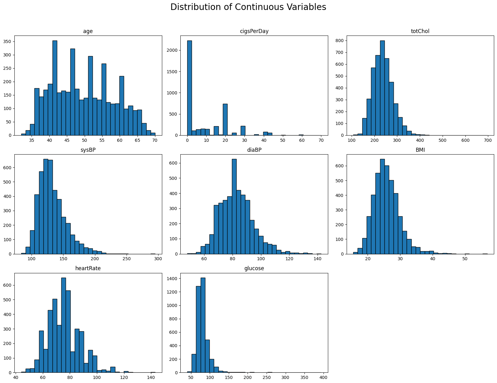
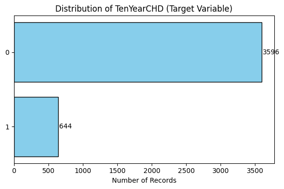
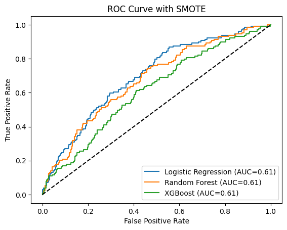
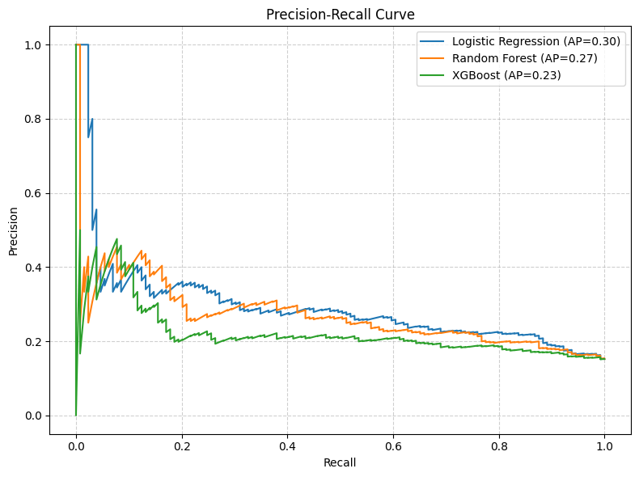

## load required libraries
import pandas as pd
import matplotlib.pyplot as plt
import seaborn as sns
import numpy as np
from sklearn.model_selection import train_test_split, GridSearchCV
from sklearn.preprocessing import StandardScaler
from sklearn.impute import SimpleImputer
from sklearn.linear_model import LogisticRegression
from sklearn.ensemble import RandomForestClassifier
from xgboost import XGBClassifier
from sklearn.metrics import classification_report, confusion_matrix, roc_auc_score, roc_curveFRAMINGHAM HEART STUDY
# import the Framingham study dataset
framingham_data = pd.read_csv(r"C:\Users\KAsab\Desktop\PORTFOLIO PROJECTS\framingham_heart_study.csv")framingham_data.head()| male | age | education | currentSmoker | cigsPerDay | BPMeds | prevalentStroke | prevalentHyp | diabetes | totChol | sysBP | diaBP | BMI | heartRate | glucose | TenYearCHD | |
|---|---|---|---|---|---|---|---|---|---|---|---|---|---|---|---|---|
| 0 | 1 | 39 | 4.0 | 0 | 0.0 | 0.0 | 0 | 0 | 0 | 195.0 | 106.0 | 70.0 | 26.97 | 80.0 | 77.0 | 0 |
| 1 | 0 | 46 | 2.0 | 0 | 0.0 | 0.0 | 0 | 0 | 0 | 250.0 | 121.0 | 81.0 | 28.73 | 95.0 | 76.0 | 0 |
| 2 | 1 | 48 | 1.0 | 1 | 20.0 | 0.0 | 0 | 0 | 0 | 245.0 | 127.5 | 80.0 | 25.34 | 75.0 | 70.0 | 0 |
| 3 | 0 | 61 | 3.0 | 1 | 30.0 | 0.0 | 0 | 1 | 0 | 225.0 | 150.0 | 95.0 | 28.58 | 65.0 | 103.0 | 1 |
| 4 | 0 | 46 | 3.0 | 1 | 23.0 | 0.0 | 0 | 0 | 0 | 285.0 | 130.0 | 84.0 | 23.10 | 85.0 | 85.0 | 0 |
EDA
print(framingham_data.info())<class 'pandas.core.frame.DataFrame'>
RangeIndex: 4240 entries, 0 to 4239
Data columns (total 16 columns):
# Column Non-Null Count Dtype
--- ------ -------------- -----
0 male 4240 non-null int64
1 age 4240 non-null int64
2 education 4135 non-null float64
3 currentSmoker 4240 non-null int64
4 cigsPerDay 4211 non-null float64
5 BPMeds 4187 non-null float64
6 prevalentStroke 4240 non-null int64
7 prevalentHyp 4240 non-null int64
8 diabetes 4240 non-null int64
9 totChol 4190 non-null float64
10 sysBP 4240 non-null float64
11 diaBP 4240 non-null float64
12 BMI 4221 non-null float64
13 heartRate 4239 non-null float64
14 glucose 3852 non-null float64
15 TenYearCHD 4240 non-null int64
dtypes: float64(9), int64(7)
memory usage: 530.1 KB
None## numerical summaries of variables
print(framingham_data.describe()) male age education currentSmoker cigsPerDay \
count 4240.000000 4240.000000 4135.000000 4240.000000 4211.000000
mean 0.429245 49.580189 1.979444 0.494104 9.005937
std 0.495027 8.572942 1.019791 0.500024 11.922462
min 0.000000 32.000000 1.000000 0.000000 0.000000
25% 0.000000 42.000000 1.000000 0.000000 0.000000
50% 0.000000 49.000000 2.000000 0.000000 0.000000
75% 1.000000 56.000000 3.000000 1.000000 20.000000
max 1.000000 70.000000 4.000000 1.000000 70.000000
BPMeds prevalentStroke prevalentHyp diabetes totChol \
count 4187.000000 4240.000000 4240.000000 4240.000000 4190.000000
mean 0.029615 0.005896 0.310613 0.025708 236.699523
std 0.169544 0.076569 0.462799 0.158280 44.591284
min 0.000000 0.000000 0.000000 0.000000 107.000000
25% 0.000000 0.000000 0.000000 0.000000 206.000000
50% 0.000000 0.000000 0.000000 0.000000 234.000000
75% 0.000000 0.000000 1.000000 0.000000 263.000000
max 1.000000 1.000000 1.000000 1.000000 696.000000
sysBP diaBP BMI heartRate glucose \
count 4240.000000 4240.000000 4221.000000 4239.000000 3852.000000
mean 132.354599 82.897759 25.800801 75.878981 81.963655
std 22.033300 11.910394 4.079840 12.025348 23.954335
min 83.500000 48.000000 15.540000 44.000000 40.000000
25% 117.000000 75.000000 23.070000 68.000000 71.000000
50% 128.000000 82.000000 25.400000 75.000000 78.000000
75% 144.000000 90.000000 28.040000 83.000000 87.000000
max 295.000000 142.500000 56.800000 143.000000 394.000000
TenYearCHD
count 4240.000000
mean 0.151887
std 0.358953
min 0.000000
25% 0.000000
50% 0.000000
75% 0.000000
max 1.000000 ## check for missing values
print(framingham_data.isnull().sum())male 0
age 0
education 105
currentSmoker 0
cigsPerDay 29
BPMeds 53
prevalentStroke 0
prevalentHyp 0
diabetes 0
totChol 50
sysBP 0
diaBP 0
BMI 19
heartRate 1
glucose 388
TenYearCHD 0
dtype: int64## group variables
categorical_features = ['male','currentSmoker','BPMeds','prevalentStroke','prevalentHyp','diabetes'] # coded as dummy variables
numeric_features = ['age', 'cigsPerDay', 'totChol', 'sysBP', 'diaBP', 'BMI', 'heartRate', 'glucose']
framingham_data[numeric_features].hist(
figsize=(16,12),
edgecolor = "black",
bins=30,
grid=False
)
plt.grid(True, linestyle='--', alpha=0.6)
plt.suptitle('Distribution of Continuous Variables', fontsize=20, y=1.02)
plt.tight_layout()
plt.show()

# Sort value counts
chd_counts = framingham_data['TenYearCHD'].value_counts().sort_values()
# Plot
plt.figure(figsize=(6, 4))
bars = plt.barh(chd_counts.index.astype(str), chd_counts.values, color='skyblue', edgecolor='black')
plt.xlabel("Number of Records")
plt.title("Distribution of TenYearCHD (Target Variable)")
# Add value labels
for bar in bars:
width = bar.get_width()
plt.text(width + 10, bar.get_y() + bar.get_height() / 2,
f'{width}', va='center', fontsize=10)
plt.tight_layout()
plt.show()
The distribution of the target variable shows class imbalance with the negative class considerably higher in proportion.
Preprocessing
## features
X = framingham_data.iloc[:,:-1]
y = framingham_data.iloc[:,-1]## split into training and test set
X_train, X_test, y_train, y_test = train_test_split(
X, y, test_size=0.2, stratify=y, random_state=42
)## create preproceesing pipelines
from imblearn.pipeline import Pipeline as ImbPipeline
from imblearn.over_sampling import SMOTE
from sklearn.pipeline import Pipeline
from sklearn.compose import ColumnTransformer,make_column_selector
from sklearn.impute import SimpleImputer
from sklearn.preprocessing import StandardScaler, OneHotEncoder
from sklearn.model_selection import train_test_split
# Numeric pipeline
numeric_pipeline = Pipeline(steps=[
('imputer', SimpleImputer(strategy='mean')),
('scaler', StandardScaler())
])
# Categorical pipeline
categorical_pipeline = Pipeline(steps=[
('imputer', SimpleImputer(strategy='most_frequent')),
('encoder', OneHotEncoder(handle_unknown='ignore',sparse_output=False))
])
# ColumnTransformer
preprocessor = ColumnTransformer(transformers=[
('num', numeric_pipeline,make_column_selector(dtype_include=np.number)),
('cat', categorical_pipeline,make_column_selector(dtype_include=object))
])
# Fit and transform training data, transform test data
X_train_processed = preprocessor.fit_transform(X_train)
X_test_processed = preprocessor.transform(X_test)
Model Training
Due to class imbalance of the target variable, SMOTE(Synthetic Minority Oversampling Technique) will be incorporated into the model training pipeline
# Define models with SMOTE in pipeline
models = {
"Logistic Regression": (
ImbPipeline([
('preprocess', preprocessor),
('smote', SMOTE(random_state=42)),
('clf', LogisticRegression(max_iter=1000))
]),
{'clf__C': [0.01, 0.1, 1, 10]}
),
"Random Forest": (
ImbPipeline([
('preprocess', preprocessor),
('smote', SMOTE(random_state=42)),
('clf', RandomForestClassifier(random_state=42))
]),
{'clf__n_estimators': [100, 200], 'clf__max_depth': [5, 10, None]}
),
"XGBoost": (
ImbPipeline([
('preprocess', preprocessor),
('smote', SMOTE(random_state=42)),
('clf', XGBClassifier(eval_metric='logloss', use_label_encoder=False))
]),
{'clf__n_estimators': [100, 200], 'clf__max_depth': [3, 5, 7]}
)
}best_model = None
best_auc = 0
for name, (pipeline, param_grid) in models.items():
grid = GridSearchCV(pipeline, param_grid, cv=5, scoring='roc_auc', n_jobs=-1)
grid.fit(X_train, y_train)
y_pred = grid.predict(X_test)
y_proba = grid.predict_proba(X_test)[:, 1]
auc = roc_auc_score(y_test, y_proba)
print(f"\n{name} Best Params: {grid.best_params_}")
print(classification_report(y_test, y_pred))
print("Confusion Matrix:\n", confusion_matrix(y_test, y_pred))
print(f"ROC AUC: {auc:.4f}")
fpr, tpr, _ = roc_curve(y_test, y_proba)
plt.plot(fpr, tpr, label=f"{name} (AUC={auc:.2f})")
if auc > best_auc:
best_auc = auc
best_model = grid.best_estimator_
# ROC Curve
plt.plot([0, 1], [0, 1], "k--")
plt.xlabel("False Positive Rate")
plt.ylabel("True Positive Rate")
plt.title("ROC Curve with SMOTE")
plt.legend()
plt.show()
Logistic Regression Best Params: {'clf__C': 0.01}
precision recall f1-score support
0 0.91 0.68 0.78 719
1 0.25 0.60 0.36 129
accuracy 0.67 848
macro avg 0.58 0.64 0.57 848
weighted avg 0.81 0.67 0.71 848
Confusion Matrix:
[[490 229]
[ 51 78]]
ROC AUC: 0.6972
Random Forest Best Params: {'clf__max_depth': 5, 'clf__n_estimators': 200}
precision recall f1-score support
0 0.89 0.74 0.81 719
1 0.26 0.51 0.35 129
accuracy 0.71 848
macro avg 0.58 0.63 0.58 848
weighted avg 0.80 0.71 0.74 848
Confusion Matrix:
[[532 187]
[ 63 66]]
ROC AUC: 0.6760
XGBoost Best Params: {'clf__max_depth': 3, 'clf__n_estimators': 100}
precision recall f1-score support
0 0.86 0.88 0.87 719
1 0.21 0.18 0.19 129
accuracy 0.77 848
macro avg 0.53 0.53 0.53 848
weighted avg 0.76 0.77 0.76 848
Confusion Matrix:
[[631 88]
[106 23]]
ROC AUC: 0.6138best_modelPipeline(steps=[('preprocess',
ColumnTransformer(transformers=[('num',
Pipeline(steps=[('imputer',
SimpleImputer()),
('scaler',
StandardScaler())]),
<sklearn.compose._column_transformer.make_column_selector object at 0x00000219C21A95B0>),
('cat',
Pipeline(steps=[('imputer',
SimpleImputer(strategy='most_frequent')),
('encoder',
OneHotEncoder(handle_unknown='ignore',
sparse_output=False))]),
<sklearn.compose._column_transformer.make_column_selector object at 0x00000219C9B78B60>)])),
('smote', SMOTE(random_state=42)),
('clf', LogisticRegression(C=0.01, max_iter=1000))])In a Jupyter environment, please rerun this cell to show the HTML representation or trust the notebook. On GitHub, the HTML representation is unable to render, please try loading this page with nbviewer.org.
Pipeline(steps=[('preprocess',
ColumnTransformer(transformers=[('num',
Pipeline(steps=[('imputer',
SimpleImputer()),
('scaler',
StandardScaler())]),
<sklearn.compose._column_transformer.make_column_selector object at 0x00000219C21A95B0>),
('cat',
Pipeline(steps=[('imputer',
SimpleImputer(strategy='most_frequent')),
('encoder',
OneHotEncoder(handle_unknown='ignore',
sparse_output=False))]),
<sklearn.compose._column_transformer.make_column_selector object at 0x00000219C9B78B60>)])),
('smote', SMOTE(random_state=42)),
('clf', LogisticRegression(C=0.01, max_iter=1000))])ColumnTransformer(transformers=[('num',
Pipeline(steps=[('imputer', SimpleImputer()),
('scaler', StandardScaler())]),
<sklearn.compose._column_transformer.make_column_selector object at 0x00000219C21A95B0>),
('cat',
Pipeline(steps=[('imputer',
SimpleImputer(strategy='most_frequent')),
('encoder',
OneHotEncoder(handle_unknown='ignore',
sparse_output=False))]),
<sklearn.compose._column_transformer.make_column_selector object at 0x00000219C9B78B60>)])<sklearn.compose._column_transformer.make_column_selector object at 0x00000219C21A95B0>
SimpleImputer()
StandardScaler()
<sklearn.compose._column_transformer.make_column_selector object at 0x00000219C9B78B60>
SimpleImputer(strategy='most_frequent')
OneHotEncoder(handle_unknown='ignore', sparse_output=False)
SMOTE(random_state=42)
LogisticRegression(C=0.01, max_iter=1000)
fitted_models = {}
for name, (pipeline, param_grid) in models.items():
grid = GridSearchCV(pipeline, param_grid, cv=5, scoring='roc_auc', n_jobs=-1)
grid.fit(X_train, y_train)
fitted_models[name] = grid.best_estimator_ # Save fitted model
y_pred = grid.predict(X_test)
y_proba = grid.predict_proba(X_test)[:, 1]
print(f"\n{name} Best Params: {grid.best_params_}")
print(classification_report(y_test, y_pred))
print("Confusion Matrix:\n", confusion_matrix(y_test, y_pred))
print(f"ROC AUC: {auc:.4f}")
fpr, tpr, _ = roc_curve(y_test, y_proba)
plt.plot(fpr, tpr, label=f"{name} (AUC={auc:.2f})")
if auc > best_auc:
best_auc = auc
best_model = grid.best_estimator_
# ROC Curve
plt.plot([0, 1], [0, 1], "k--")
plt.xlabel("False Positive Rate")
plt.ylabel("True Positive Rate")
plt.title("ROC Curve with SMOTE")
plt.legend()
plt.show()
Logistic Regression Best Params: {'clf__C': 0.01}
precision recall f1-score support
0 0.91 0.68 0.78 719
1 0.25 0.60 0.36 129
accuracy 0.67 848
macro avg 0.58 0.64 0.57 848
weighted avg 0.81 0.67 0.71 848
Confusion Matrix:
[[490 229]
[ 51 78]]
ROC AUC: 0.6138
Random Forest Best Params: {'clf__max_depth': 5, 'clf__n_estimators': 200}
precision recall f1-score support
0 0.89 0.74 0.81 719
1 0.26 0.51 0.35 129
accuracy 0.71 848
macro avg 0.58 0.63 0.58 848
weighted avg 0.80 0.71 0.74 848
Confusion Matrix:
[[532 187]
[ 63 66]]
ROC AUC: 0.6138
XGBoost Best Params: {'clf__max_depth': 3, 'clf__n_estimators': 100}
precision recall f1-score support
0 0.86 0.88 0.87 719
1 0.21 0.18 0.19 129
accuracy 0.77 848
macro avg 0.53 0.53 0.53 848
weighted avg 0.76 0.77 0.76 848
Confusion Matrix:
[[631 88]
[106 23]]
ROC AUC: 0.6138
### Precision-Recall Curve
plt.figure(figsize=(8,6))
for name, model in fitted_models.items():
y_proba = model.predict_proba(X_test)[:, 1]
plot_precision_recall_curve(y_test, y_proba, name)
plt.xlabel("Recall")
plt.ylabel("Precision")
plt.title("Precision-Recall Curve")
plt.legend()
plt.grid(True, linestyle="--", alpha=0.6)
plt.tight_layout()
plt.show()